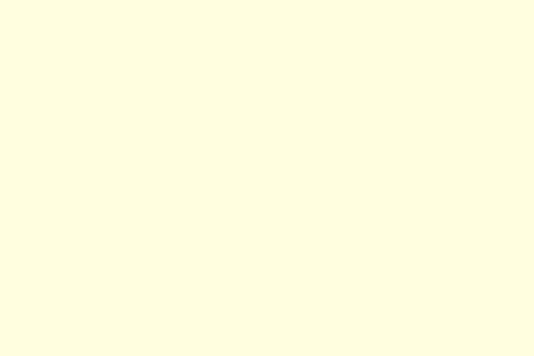

Subes lentamente por la escalera. Cada paso cruje bajo tus pies. La torre parece más alta de lo que imaginabas. Al llegar arriba, encuentras un cofre cerrado y una ventana desde donde se ve todo el bosque.
Podrías abrir el cofre y tomar lo que haya dentro, o simplemente observar el paisaje y reflexionar. Esta elección podría marcar un punto definitivo.

¿Qué decides?